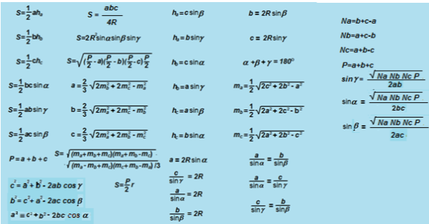
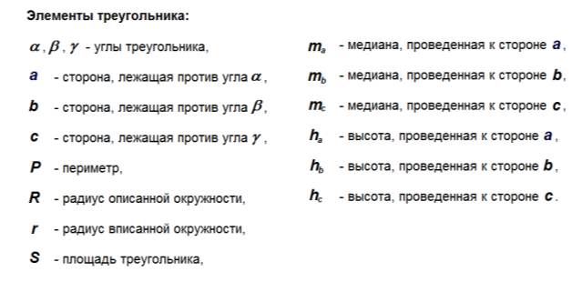

Алгоритмизация и последующее за ней программирование - выстраивание явного порядка вычислений
сложной математической модели. Узнать значение очередной переменной можно, если значения всех переменных,
которые необходимы для её вычисления, к данному моменту уже определены. Поскольку вычисляемые математические
выражения соответствуют законам, по которым функционирует мир, то построить алгоритм - это значит определить
порядок вычисления законов.
Рассмотрим знакомую вам область - законы треугольника. Элементы треугольника представим
переменными-понятиями. Все эти понятия в треугольнике связаны между собой законами. Изобразим систему
«треугольник» в виде графа понятий и законов (см.рис.12.1). На модели «треугольник» сформулируем задачу: допустим нам
известны две стороны треугольника a и b и угол между ними γ.


Рисунок 12.1. - Система «треугольник»
Допустим, что нам известны к настоящему моменту законы:
- c² = a² + b² - 2ab·cos(γ)
- a² = b² + c² - 2bc·cos(α)
- b² = a² + c² - 2ac·cos(β)
- P = a + b + c (4)
- S = √(P/2·(P/2 - a)·(P/2 - b)·(P/2 - c))
- h_b = a·sin(γ)
- h_c = b·sin(α)
- h_a = c·sin(β)
- m_a = 0.5·√(2c² + 2b² - a²)
- m_b = 0.5·√(2a² + 2c² - b²)
- m_c = 0.5·√(2a² + 2b² - c²)
- S = (P·r)/2
- S = 2R²·sin(α)·sin(β)·sin(γ)
Граф можно представить в виде, удобном для машинной записи — матрицей (см.табл.12.1), показывающей, в каком законе
содержатся какие понятия. По горизонтали – связи (законы), по вертикали – элементы (понятия). В пересечении
i-той строки и j-го столбца в матрице «элементы-связи» ставится отметка, если i-тая
переменная содержится в записи j-го закона. Матрица — это модель системы, составленная из моделей её
элементов.
Таблица 12.1. - Матрица графа
Задача. Известны длины двух сторон и угол между ними: a, b,
γ. Найти остальные неизвестные величины в треугольнике.
Пометим красным цветом в матрице «элементы-связи» известные в задаче величины и соответствующие им
строки.
Далее найдём среди столбцов матрицы такие, в которых упоминаются любые из заданных в задаче величин
γ и имеется еще одна любая неизвестная величина. Такие столбцы есть. Новая величина
c, которая может быть вычислена из уравнения (1), и hb из
уравнения (6).
За счёт законов c² = a² + b² - 2ab·cos(γ) и hb = a·sin(γ) наше множество известных
величин пополнилось: hb.
Для наглядности подкрасим красным цветом еще строки c, hb.
Найдём снова один или несколько столбцов, в которых упоминаются любые величины из множества
hb и только одна новая неизвестная величина.
Таких столбцов несколько: 2, 3, 4, 9, 10, 11. Можно параллельно на этом этапе вычислить сразу
несколько величин: α, β, P, ma,
mb, mc. Ряд известных величин снова пополнился:
mc.
Переходя от строк к столбцам и снова от столбцов к строкам, процедура продолжается до момента определения
величины, которая нас интересует.
Фактически для данной задачи граф «треугольника» приводится к ярусно-параллельной форме. Такая
форма графа соответствует алгоритму вычисления ответа задачи.
Если на каком-то этапе оказалось, что есть только столбцы с двумя (или более) неизвестными переменными, то
надо использовать методы решения систем уравнений.
Обратите внимание. Если взять за основу в графе элементарные законы, то шанс найти среди них
столбец с одной неизвестной выше, чем у столбцов со множеством переменных.
Так, например, в рассматриваемой нами предметной области есть закон:
S·r·P =
R·a·b·c·sin(α)·sin(β)·sin(γ), который содержит все основные понятия объекта «треугольник».
Задействовать его в расчетах достаточно трудно, так как вряд ли в какой-то задаче будут известны 9 из 10
значений переменных.
Однако, такой закон фактически является определением треугольника, так как позволяет установить для
объекта, является ли он треугольником по набору значений его характеризующих величин.
С помощью данного метода можно параллельно решить ряд интересных задач:
- Найти набор таких законов, количество которых будет минимальным для определения заданного
множества переменных.
- Определить минимальное количество действий, необходимых для решения поставленной задачи
(сложность задачи).
- Определить максимально возможную сложность задач в заданной предметной области.
- Определить количество задач любой сложности для заданного набора законов.
- Определить, как это зависит от выбора конкретных законов из множества заданных.
- Определить, какой набор законов даёт наибольшее количество задач.
- Сколько разных вариантов решения есть у конкретной задачи и как это связано с набором законов.
- Как будет изменяться значение искомой переменной, если менять значение какой-либо заданной
переменной.
- Какова степень самой сложной из полученных зависимостей.
Поиск минимального набора элементарных законов, достаточных для решения любой задачи в заданной
предметной области, совпадает с задачей определения базиса элементарных законов.